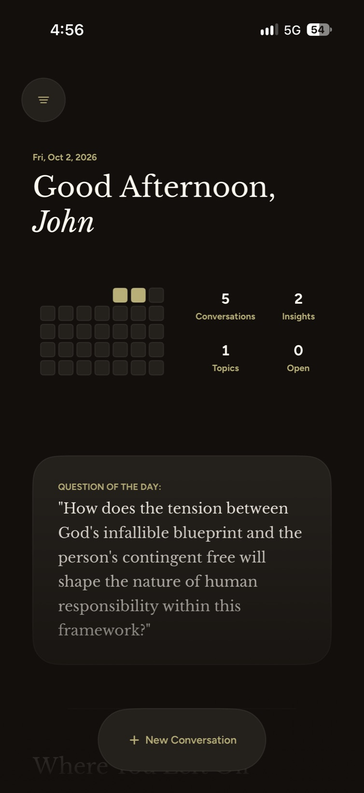
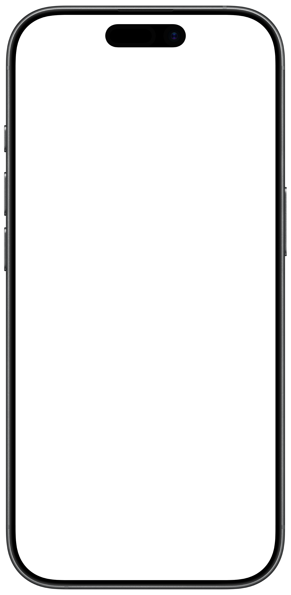

An AI of your own.
Angrove is a private, local-first companion for the rigorous study of philosophy, history, and theology. The app answers on your iPhone and does not send your questions to a model server.


I wanted to be on the side of AI that is not meant to replace our humanity, but to enhance it.
Over the past few years I’ve noticed that it is accentuating a crisis of meaning in many people. The world is advancing faster than ever and so many people are unsure where they fit into it. AI is a powerful tool to increase productivity, but as it advances some are afraid that they might get optimized out of a job, streamlined out of their future. I wanted to be on the side of AI that is not meant to replace our humanity but enhance it.
When I first saw that there were AI models small enough to run on mobile hardware, the technical side of me was enamored by the possibilities. As I started to poke around I realized the potential for leveraging AI in a way only a local model could, true privacy. How could I use this technology in my larger goal of addressing the crisis of meaning? That’s when I began to conceptualize this project. This app is a space for you to explore some of life’s biggest questions in a place that is private, offline, and free forever. I have a moral responsibility to use all my skills and abilities to achieve the highest possible good I can, and this project is one expression of that.
More RamblingWhat Angrove
Stands On
Human thought is increasingly harvested, analyzed, and stored by centralized entities. Private reflection isn't private anymore and some of the most important questions a person can ask, about faith, meaning, existence, and truth, are too contentious or too personal to ask openly. So they go unexamined, for lack of anywhere safe to bring them.
Privacy
Angrove runs Google’s Gemma 4 model entirely on your iPhone. Your questions and conversations never leave your phone.
Performance
Performance has been optimized to bring the best reasoning possible on mobile hardware. Paired with a curated library of texts, Angrove is ready for your most difficult questions
Personalization
Angrove does more than just answer your questions, it prompts you to go deeper and connect ideas to facilitate true understanding
A Map of Your Own Thinking
An answer highlights the terms worth keeping. Save one and it becomes an Insight, your Insight Tree grows to hold it, and Study lets you walk around it in 3D.
The Library
Answers You Can Trace to the Source.
Angrove grounds its answers in a Library of primary sources: Scripture, the Church Fathers, Thomas Aquinas, the councils and catechisms, and the classical philosophers and historians. All 37 works and 51,836 passages are searched on your phone.
- Passages, not paraphrase. Answers draw on real passages from the Library, and scripture citations link straight to the text.
- Reference, not memory. What Angrove cites is looked up in the Library when you ask, not recalled from what the model learned in training.
- Honest about its limits. When a question depends on a source the Library doesn't hold, Angrove should say so rather than invent a quotation. A phone-sized model can still misquote, so check anything that matters.
- Read the whole work. Every source can be opened and read in full, not just quoted.
-
Thomistic Theology
Summa Theologica
17,783 passages
-
Sacred Scripture
World English Bible
5,973 passages
-
Early & Medieval Christianity
City of God
2,801 passages
-
Philosophy
Nicomachean Ethics
443 passages
-
History
History of Rome
5,937 passages
-
Councils & Creeds
The Ecumenical Creeds
63 passages
-
Early & Medieval Christianity
Confessions
655 passages
-
Catechisms & Confessions
Heidelberg Catechism
88 passages
-
Political & Economic Thought
The Prince
213 passages
-
History
Parallel Lives
2,103 passages
See all 37 works
Scripture and Creeds
- World English Bible
- The Ecumenical Creeds
- The Didache
Fathers and Doctors
- Summa Theologica
- City of God
- Confessions
- Against Heresies
- On the Incarnation
- First Apology
- Proslogion
- Ecclesiastical History
- Ecclesiastical History of the English People
Councils, Catechisms, and Confessions
- The Seven Ecumenical Councils
- Canons and Decrees of the Council of Trent
- Catechism of the Council of Trent
- Baltimore Catechism No. 3
- Heidelberg Catechism
- Augsburg Confession
- Belgic Confession
- Westminster Confession of Faith
- Thirty-Nine Articles
Philosophy
- Nicomachean Ethics
- Metaphysics
- Categories
- The Consolation of Philosophy
- The Prince
- The Wealth of Nations
History
- History of Rome
- Antiquities of the Jews and The Jewish War
- Parallel Lives
- The Histories
- History of the Peloponnesian War
- Annals and Histories
- The Decline and Fall of the Roman Empire
Founding Documents
- Magna Carta
- Declaration of Independence
- Constitution of the United States
Coming to iPhone
Bring the Question You've Been Carrying.
Angrove is free, private, and in active development. Check launch status for updates as development continues.